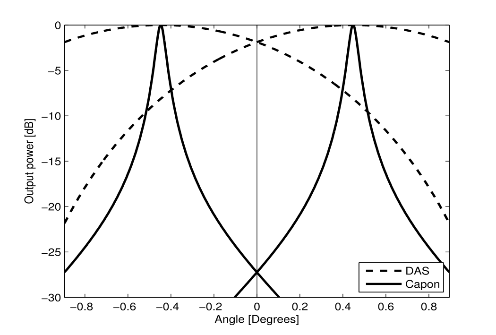

LCA
Low Complexity Adaptive Beamformer
Jo Inge Buskenes & Andreas Austeng
Kongsberg Maritime AS
4. Desember 2014

Outline
- Who are we?
- MV and active adaptive acoustic imaging
- LCA
- What more ???
University of Oslo (UiO)
The Faculty of Mathematics and Natural Sciences (Matnat)
Department of Informatics (Ifi)
Digital signalbehandling og bildeanalyse (DSB)
- Fire faste vitenskapelige ansatte
(Anne Solberg, Fritz Albregtsen, Sverre Holm og Andreas Austeng) - En ingeniør
(Svein Bø) - For tiden:
- 5 II'ere
(Leiv Gelius, Roy E Hansen, Håvard Danielsen, Eigil Samset, Are Jensen) - 2 postdoctorer
(Ann Blomberg, Sten Roar Snare) - 12 stipendiater
Jo Inge Buskenes, Andreas Kleppe, Stig Asle Vaksvik Synnes, Vikash Pandey, Hani Mirarkolaei, Lars Hofsøy Breivik, Trond Bergh, Anders Ueland, Ole Marius Hoel Rindal, Tor Inge Birkenes, Knut Landmark, Angelique Berghelot
Acoustc imaging and image formation
24 PhD/Postdoctors last 10 years
|
|
Current collaboration with KM
- Tor Inge Birkenes, NæringsPhD
- CIUS: Centre for Innovative Ultrasound Solutions
in healthcare, maritime, and oil & gas industries- Felles søknad med NTNU, HiBV, Ifi/UiO, GE Vingmed, Kongsberg Maritime, Medistim, Halfwave, InPhase Solutions, Statoil, Helse Midt-Norge, ...
- 4 PhD'er v/Ifi, 8 PhD'er v/HiBV, 28 PhD/PDoc v/NTNU
Active adaptive acoustic imaging
- MV/MVDR/Capon BF:
Minimum Variance (Distortionless Response) Beamformer- Method known to
- work well in passive imaging
- fail if coherent signals
- need lots of data for estimating covariance matrix $R$
- Method known to
- We (DSB/Ifi/UiO) have worked on adapting this method for active acoustic imaging
- Single snapshot data, coherent signals, robustification, implementation ...
Synnevåg, J.-F.; Austeng, A.; Holm, S., "Adaptive Beamforming Applied to Medical Ultrasound Imaging," Ultrasonics, Ferroelectrics, and Frequency Control, IEEE Transactions on , vol.54, no.8, pp.1606,1613, August 2007
Synnevåg, J.-F.; Austeng, A.; Holm, S., "Benefits of minimum-variance beamforming in medical ultrasound imaging," Ultrasonics, Ferroelectrics, and Frequency Control, IEEE Transactions on , vol.56, no.9, pp.1868,1879, September 2009
Synnevåg, J.-F.; Austeng, A.; Holm, S., "A low-complexity data-dependent beamformer," Ultrasonics, Ferroelectrics, and Frequency Control, IEEE Transactions on , vol.58, no.2, pp.281,289, February 2011
Delay-and-sum (DAS) beamformer (BF)
| Beamforming: The process of combining signals from different elements |
- The weights $\mathbf{w}$ are predefined and (usually) used for all pixels in the image
DAS uses predefined windows
 |
Typical window functions |
| Spatial response of window functions |
Minimum variance (MV) beamforming
- Adaptively choose weights with unit gain in direction of interest, that minimize the contribution from other directions:
MV response to point target
The MV BF passes the signal of interest with unity gain while the interfering signal is suppressed.
MV response to cyst/shadow target
The MV BF allows large sidelobes in regions with little energy.
Challenges when using the MV BF
- Find a good estimate for $R$ (the covariance matrix)
- Make the MV BF robust:
- Make it work for coherent signals
- Attain
- Narrower peaks than DAS
- Steeper and more defined edges than DAS
- BUT: Speckle as DAS
- Reduce the computational cost.
- Use it correctly!
Estimating $R$ : Averaging and conditioning

High resolution BFs needs better spatial sampling!
Lessons learned ...
| Known problems | Solutions | |
|---|---|---|
|
$\Rightarrow$ |
|
|
$\Rightarrow$ |
|
|
$\Rightarrow$ |
|
|
$\Rightarrow$ |
|
What can be obtained?
Simulation study
Images courtesy by J.P. Åsen
What can be obtained?
In vitro example
| DAS | MV | MV w/oversampling |
Images courtesy by J.P. Åsen
Asen, J.; Austeng, A.; Holm, S., "Capon beamforming and moving objects-an analysis of lateral shift-invariance," Ultrasonics, Ferroelectrics, and Frequency Control, IEEE Transactions on , vol.61, no.7, pp.1152,1160, July 2014